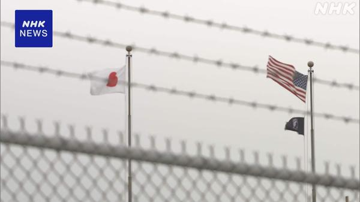
在日米軍駐留経費、米が現在の約3倍・3兆円超の負担を要求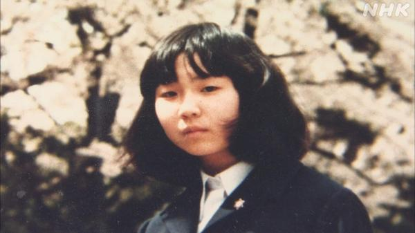
横田めぐみさん拉致から49年、母・早紀江さん「1回でもいいから会いたい」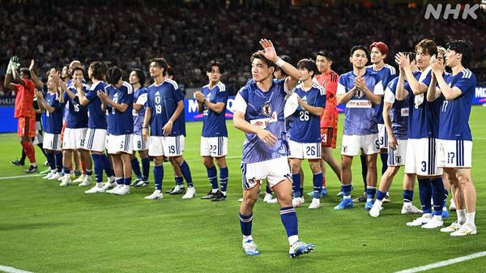
サッカー日本代表、ブラジルに3-2で勝利 W杯の雪辱果たす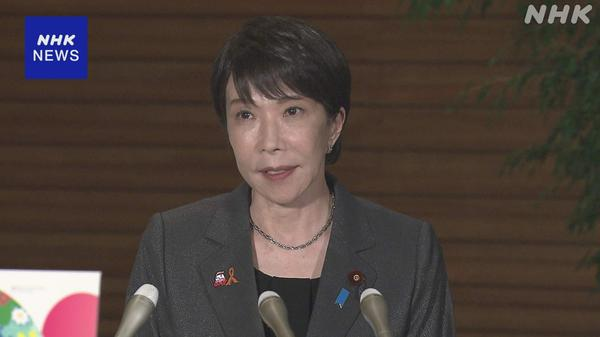
高市首相、「アジア版IEA」創設を提唱へ 石油備蓄の協調放出ルールなど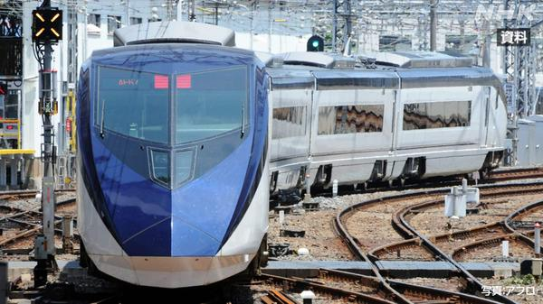
京成電鉄「スカイライナー」予約システムに不正アクセス、最大337万件流出か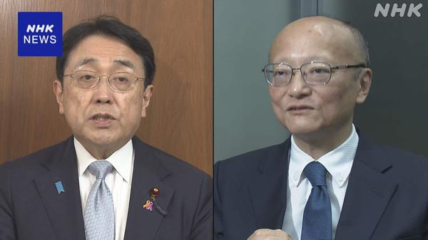
経産省、アジア開発銀行とアジアの原発導入支援で協力覚書へ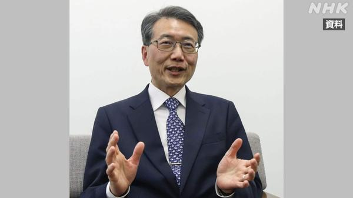
新ロシア大使に宇山秀樹・元外務省欧州局長を起用へ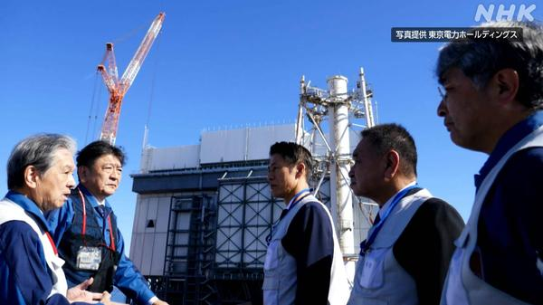
細野復興相が福島第一原発を初視察「廃炉へ国も責任を持って取り組む」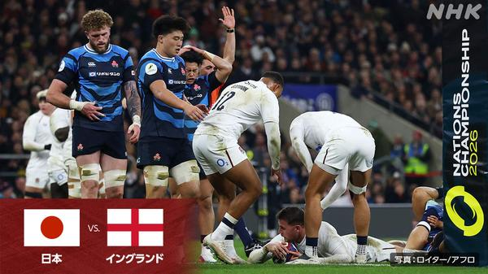
ラグビー日本代表、イングランドに15-78で大敗 13トライ奪われる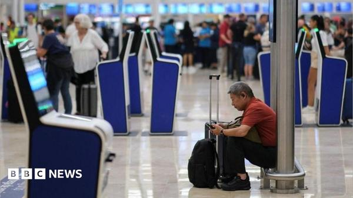
全米の航空機運航停止、原因は「銅線の更新作業」と運輸長官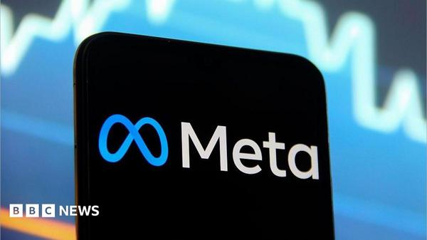
イタリア当局、Metaに8億500万ユーロの制裁金 ユーザー写真へのアクセスで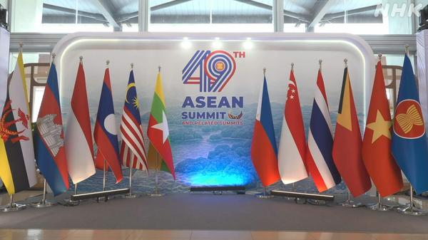
ASEAN首脳会議がフィリピンで開幕へ 南シナ海・ミャンマー情勢が焦点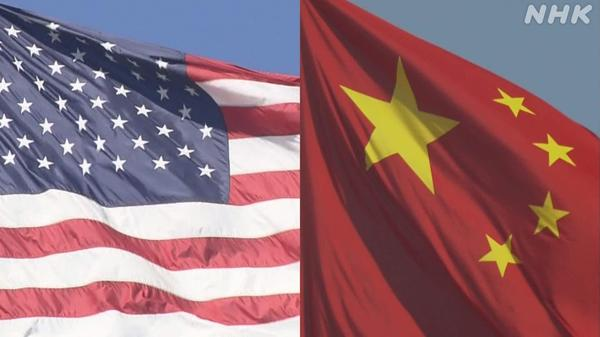
米中が関税引き下げに向けた「貿易委員会」初会合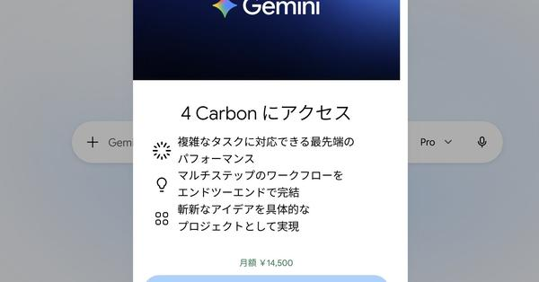
Google「Gemini 4 Carbon」一般提供開始、Anthropicは「Claude Fable／Mythos 5.2」発表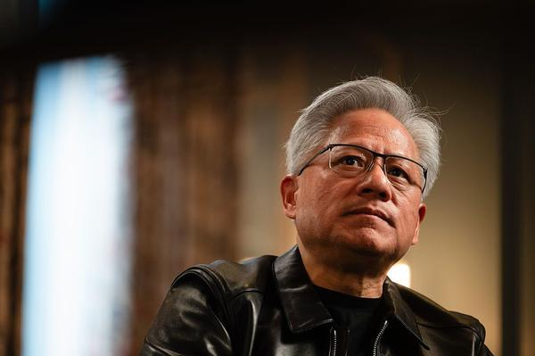
フアン氏退任にアジア各国政府が反応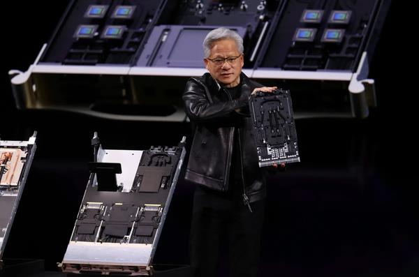
中国最強クラスのAIモデル、輸出禁止のNVIDIA製チップで学習か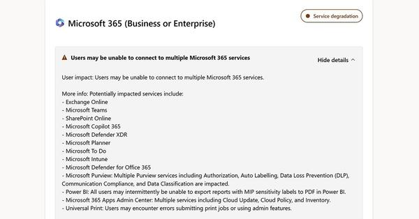
M365障害、ChatGPT／Claudeのコネクタにも波及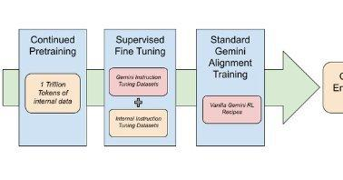
Googleの社内専用コーディングAI「GfG」の全容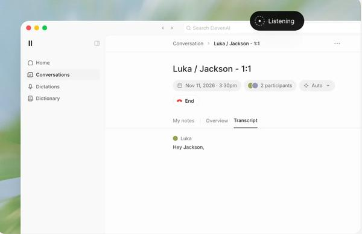
ElevenLabs、議事録作成と音声入力を一体化したチーム向けアプリ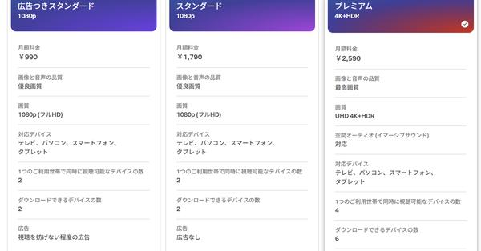
Netflixが国内で2年ぶり値上げ 広告つきプランは月額990円に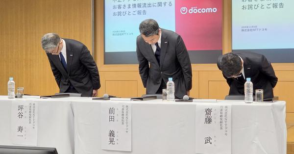
ドコモ通信障害、「5G SA」の影響は5Gユーザーの3〜4%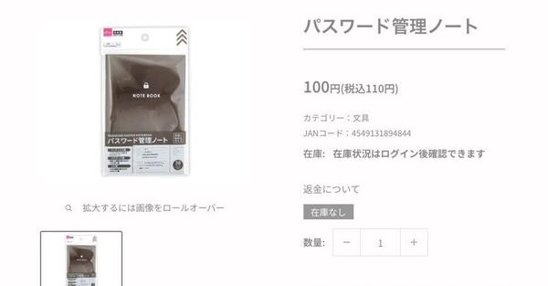
情報漏えい相次ぎアナログ回帰？ダイソー「パスワード管理ノート」が品薄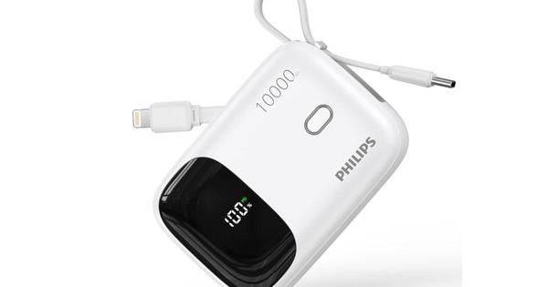
USB-CとLightningの両ケーブル一体型、フィリップスの10000mAhバッテリー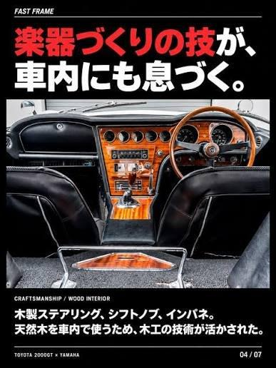
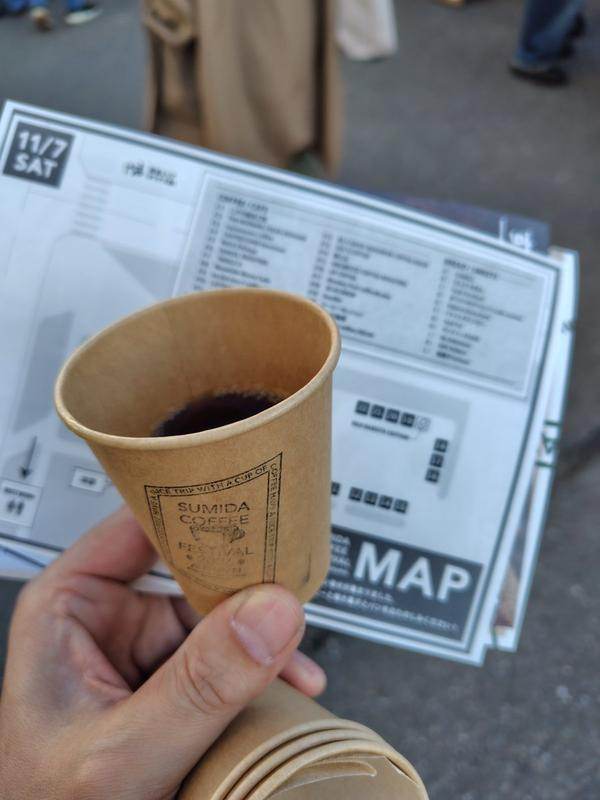